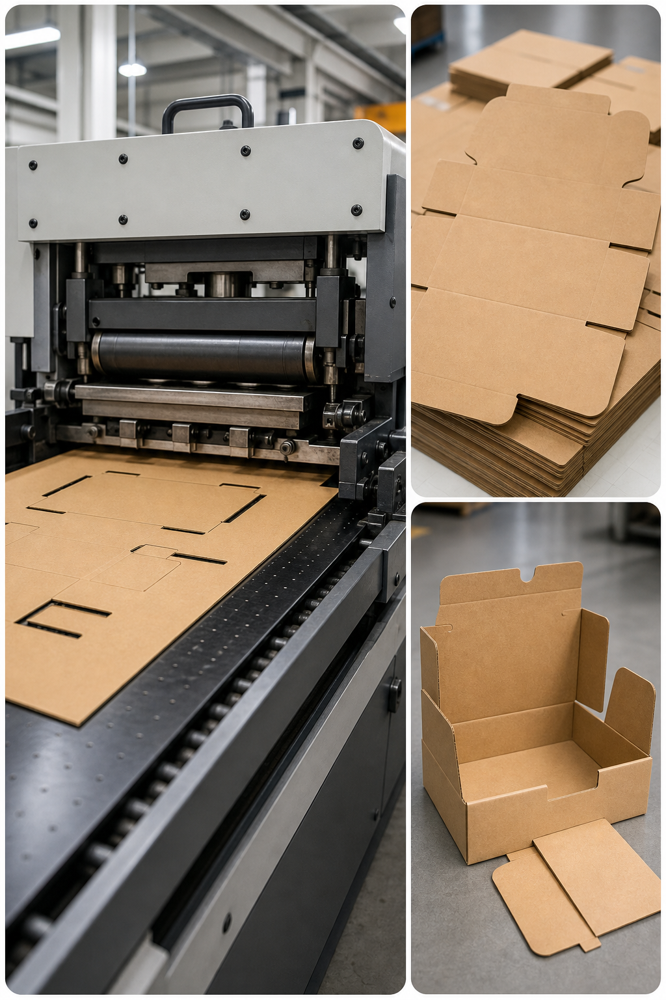

Die cutting
Accurate shape conversion across automatic, cylinder and platen die cutting formats.
Die cutting converts printed sheets into final shapes required for retail presentation, garment accessories and packaging applications. Our setup combines automatic flat-bed output, Heidelberg cylinder support and creasing-cutting equipment for stable registration, cleaner cut quality and dependable conversion throughput.
Longhua and medium-format lines support shaped conversion where steady throughput and cleaner outline control are required.
Heidelberg cylinder and PYQ creasing-cutting support help cover specialty jobs, repeat programs and accurate crease work.
Converted parts are prepared for onward folding, gluing, foil, UV or dispatch requirements where needed.
